#1 - Er is geen skiplink
Impact: Advies
Type: Techniek
WCAG: 2.4.1
EN: 9.2.4.1
De pagina's hebben geen skiplink. Met een skiplink slaan toetsenbordgebruikers de navigatie over die op elke pagina terugkomt, en gaan ze direct naar de hoofdinhoud.
De pagina's hebben wel landmarks en koppen, en daarmee kun je ook door de inhoud navigeren. Een skiplink maakt de website voor toetsenbordgebruikers nog beter te bedienen.
User story
Ik bedien de website met het toetsenbord. Als ik een pagina open, moet ik met de Tab-toets langs elk element in het hoofdmenu voordat ik bij de hoofdinhoud kom. Dat moet ik op elke pagina opnieuw doen. Ik verwacht dat ik direct naar de hoofdinhoud kan springen.
Hoe te testen
Druk vanuit de adresbalk één keer op Tab. Het eerste element dat focus krijgt, hoort een skiplink te zijn ("Naar de hoofdinhoud"). De link wordt zichtbaar als hij focus krijgt, en zet de focus op de hoofdinhoud als je hem activeert. Landmarks en een goede koppenstructuur vullen dit aan.
Oplossing
Zet een link "Naar de hoofdinhoud" aan het begin van de pagina. Maak de link zichtbaar zodra hij toetsenbordfocus krijgt, en laat hem de focus naar de hoofdinhoud verplaatsen.
#2 - Het logo heeft een onvolledige tekstalternatief en een linktekst die niet zegt waar de link naartoe gaat
Impact: Serieus
Type: Content
WCAG: 1.1.1, 2.4.4
EN: 9.1.1.1, 9.2.4.4
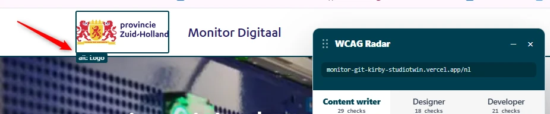
In het logo bovenaan de website staat de tekst "provincie Zuid-Holland". De tekstalternatief (de alt-tekst) is alleen "Logo". De alt-tekst moet alle zichtbare tekst in het logo bevatten, zodat bezoekers die de afbeelding niet zien dezelfde informatie krijgen.
Het logo is ook een link, en de alt-tekst is de toegankelijke naam van die link. De naam "Logo" zegt niet waar de link naartoe gaat.
User story
Ik lees de website met een schermlezer. Als ik bij het logo kom, hoor ik niet de volledige naam van de organisatie. Ik verwacht dat ik hoor wat er in het logo staat, en dat de schermlezer duidelijk zegt waar de link naartoe gaat.
Hoe te testen
Open de WCAG Radar en zet de optie "Afbeeldingen en alt-tekst" aan. Vergelijk de toegankelijke naam van het logo met de tekst die je in het logo leest: de alt-tekst moet alle zichtbare tekst bevatten. Controleer daarna met de optie "Linktekst" of de link van het logo een naam heeft die zegt waar hij naartoe gaat.
Oplossing
Zet de volledige tekst van het logo en het doel van de link in de tekstalternatief, bijvoorbeeld: "Logo van provincie Zuid-Holland - Ga naar de homepage van Monitor Digitaal".
#3 - Koppen zijn niet als kop gecodeerd
Impact: Matig
Type: Content
WCAG: 1.3.1
EN: 9.1.3.1
Op veel pagina's van de website is tekst die eruitziet als een kop in de HTML niet als kop gecodeerd. Koppen geven de structuur van de informatie op de pagina weer. Zonder echte kopelementen klopt de structuur in de code niet met wat je op het scherm ziet. Bezoekers met hulpsoftware, zoals een schermlezer, missen die structuur dan.
Enkele voorbeelden, de lijst is niet volledig:
User story
Ik lees de website met een schermlezer. Als ik via de koppen navigeer, mis ik de koppen die niet als kop gecodeerd zijn. Ik verwacht dat alle koppen echte koppen zijn, zodat ik de opbouw van de pagina kan volgen.
Hoe te testen
Open de WCAG Radar en zet de optie "Koppen en structuur" aan.
- Bekijk elke tekst op de pagina die eruitziet als een kop: groter, vetter, in een andere kleur of op een opvallende plek.
- Krijgen al deze teksten een kopmarkering van de WCAG Radar? Zo niet, dan zijn ze niet gecodeerd met
h1 tot en met h6.
- Controleer het met een schermlezer: navigeer met H (NVDA, JAWS) of met de rotor (VoiceOver). Elke zichtbare kop moet als kop worden voorgelezen.
Oplossing
Gebruik de kopelementen h1 tot en met h6 voor koppen, met een niveau dat past bij de plaats van de kop in de inhoud.
#4 - De namen van knoppen worden in de verkeerde taal voorgelezen
Impact: Serieus
Type: Techniek
WCAG: 3.1.2
EN: 9.3.1.2
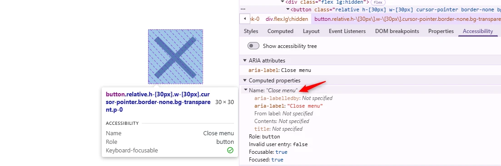
Op een klein scherm verschijnt een menuknop die het mobiele menu opent. Deze knop en de knop met het kruisje die het menu sluit, hebben een aria-label met Engelse tekst: "Open menu" en "Close menu". Een schermlezer spreekt deze Engelse teksten uit volgens de regels van de hoofdtaal van de pagina, hier Nederlands. De naam van de knop klinkt dan verkeerd en is moeilijk te verstaan.
User story
Ik lees de website met een schermlezer. Als ik bij een knop met een Engelse naam kom, spreekt mijn schermlezer die uit met Nederlandse klanken en begrijp ik niet wat de knop doet. Ik verwacht dat mijn schermlezer elke naam in de juiste taal uitspreekt.
Hoe te testen
Ga met een schermlezer langs de interactieve elementen en luister of de toegankelijke namen goed worden uitgesproken. Bekijk zo nodig de waarde van het aria-label in DevTools. Controleer of de tekst in de taal van de pagina is, of een passend lang-attribuut heeft.
Oplossing
Vertaal de teksten in het aria-label naar het Nederlands, bijvoorbeeld "Menu openen" en "Menu sluiten".
#5 - De toetsenbordfocus werkt niet goed in het mobiele menu
Impact: Serieus
Type: Techniek
WCAG: 2.4.3
EN: 9.2.4.3
Op een klein scherm opent een menuknop het mobiele menu. De toetsenbordfocus werkt in dit menu op twee punten niet goed.
Het open menu ligt over de inhoud van de pagina, maar de focus blijft niet in het menu. Bezoekers komen met Tab bij elementen op de pagina eronder terwijl het menu nog open is. Dat is verwarrend, en ze kunnen per ongeluk iets activeren.
Als het menu dicht is, krijgen de links in het menu ("Home" en "Over de Monitor Digitaal") nog steeds focus, terwijl ze niet zichtbaar zijn. Voor toetsenbordgebruikers die het scherm zien, verdwijnt de focus dan uit beeld.
User story
Ik bedien de website met het toetsenbord. Het mobiele menu staat open en ligt over de inhoud. Terwijl het menu open is, gaat mijn focus door naar de pagina erachter. Als het menu dicht is, krijgen de links in het menu toch focus. Ik verwacht dat alleen zichtbare elementen focus krijgen.
Hoe te testen
Open het mobiele menu en ga er met Tab doorheen. De focus moet in het open menu blijven en niet naar de inhoud erachter gaan. Komt de focus bij elementen op de pagina terwijl het menu nog open is, dan is dit probleem er.
Sluit het mobiele menu en ga met Tab verder. Kijk waar de focus naartoe gaat. Verdwijnt de focus bij een of meer keer drukken uit beeld, dan zijn de links in het gesloten menu nog bereikbaar.
Oplossing
Regel de focus in het mobiele menu zo:
- Houd de focus in het menu zolang het open is. Bezoekers komen pas bij elementen buiten het menu als ze het menu sluiten, met de sluitknop of met Esc.
- Of sluit het menu vanzelf zodra de focus het menu verlaat.
- Haal de inhoud van een gesloten menu uit de focusvolgorde, bijvoorbeeld met
tabindex="-1", of door de focus binnen het onderdeel met JavaScript te regelen.
#6 - Het mobiele menu bedekt elementen die focus krijgen
Impact: Serieus
Type: Techniek
WCAG: 2.4.11
EN: 9.2.4.11
Op een klein scherm ligt het open mobiele menu over interactieve elementen op de pagina eronder. Die elementen krijgen nog steeds toetsenbordfocus, terwijl het menu ze bedekt. Een element met focus moet zichtbaar zijn. Focus op verborgen elementen is verwarrend voor gebruikers van het toetsenbord en van een schermlezer.
User story
Ik bedien de website met het toetsenbord. Als ik het menu open en verder ga, komt mijn focus op knoppen die achter het menu liggen. Ik verwacht dat de focus in het menu blijft tot ik het sluit.
Hoe te testen
Open het mobiele menu en ga met Tab door de pagina. Bij elke stap moet het element met focus, met de focusindicator, ten minste voor een deel zichtbaar zijn. Het mag nooit helemaal achter het menu verdwijnen.
Oplossing
Dit kan op twee manieren:
- Houd de focus in het mobiele menu tot de bezoeker het sluit, met de sluitknop of met Esc.
- Sluit het menu vanzelf zodra de focus het menu verlaat.
Elementen onder het open menu mogen geen focus krijgen.
#7 - Een vaste balk bovenaan bedekt elementen die focus krijgen
Impact: Serieus
Type: Techniek
WCAG: 2.4.11
EN: 9.2.4.11
Op een klein scherm staat bovenaan een vaste balk (sticky header). Als een bezoeker met Shift+Tab van onder naar boven door de pagina gaat, valt een deel van de inhoud achter deze balk. Links zoals "Bekijk dit thema" krijgen dan focus terwijl de focusindicator achter de balk ligt. Toetsenbordgebruikers zien dan niet waar de focus is.
User story
Ik bedien de website met het toetsenbord. Als ik door de pagina ga, verdwijnt het element met focus achter de balk bovenaan. Ik verwacht dat ik altijd zie welk element focus heeft.
Hoe te testen
Ga met Tab en Shift+Tab door de pagina terwijl vaste kopteksten, footers, cookiemeldingen en chatvensters zichtbaar zijn. Bij elke stap moet het element met focus, met de focusindicator, ten minste voor een deel zichtbaar zijn. Het mag nooit helemaal achter andere inhoud verdwijnen.
Oplossing
Zorg dat de vaste balk de focus niet bedekt. Een element dat focus krijgt, moet zichtbaar blijven en niet achter de balk liggen. Dat kan bijvoorbeeld met genoeg ruimte bij het scrollen (scroll-padding-top), of door het gedrag of de plaats van de balk aan te passen.
Link naar pagina: https://monitor-git-kirby-studiotwin.vercel.app/nl
#8 - Te weinig contrast van de placeholdertekst
Impact: Matig
Type: Techniek
WCAG: 1.4.3
EN: 9.1.4.3
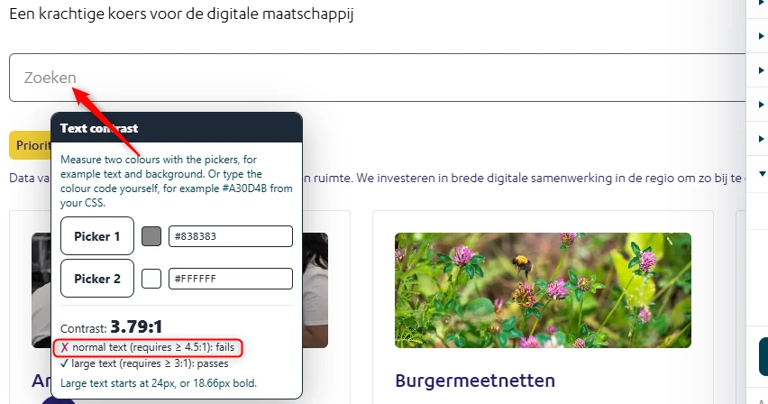
Op deze pagina staat een zoekveld. De grijze (#838383) placeholdertekst "Zoeken" op de witte achtergrond heeft een contrastverhouding van 3,8:1. Normale tekst heeft minimaal 4,5:1 nodig. Met te weinig contrast is tekst moeilijk of niet te lezen voor slechtziende bezoekers, voor bezoekers die kleuren anders zien en voor wie in fel licht naar het scherm kijkt.
User story
Ik ben slechtziend. Als tekst te weinig contrast heeft met de achtergrond, kan ik die niet goed lezen. Ik verwacht dat tekst altijd duidelijk afsteekt tegen de achtergrond.
Hoe te testen
Open de WCAG Radar en zet de optie "Contrast" aan. Tekst op een effen achtergrond met te weinig contrast wordt vanzelf gemarkeerd. Bij tekst op een foto of een kleurverloop, en bij placeholders in invoervelden, meet je met de twee pipetten de kleur van de tekst en van de achtergrond. Uitgeschakelde elementen hoeven niet aan deze eis te voldoen.
Oplossing
Pas de tekstkleur of de achtergrondkleur aan, zodat de contrastverhouding minimaal 4,5:1 is.
#9 - Het zoekveld heeft alleen een placeholder als label
Impact: Matig
Type: Techniek
WCAG: 3.3.2
EN: 9.3.3.2
Op deze pagina staat een zoekveld. Het veld heeft een placeholder, maar geen label dat altijd zichtbaar is. Zodra een bezoeker begint te typen, verdwijnt de placeholder en staat er niet meer bij waar het veld voor is.
User story
Ik lees langzamer door een cognitieve beperking, slechtziendheid of dyslexie. Als ik in het zoekveld begin te typen, verdwijnt de hulptekst en weet ik niet meer waar het veld voor is. Ik verwacht dat er altijd een zichtbaar label bij het zoekveld staat.
Hoe te testen
Bekijk elk invoerveld, elke groep selectievakjes en elke groep keuzerondjes. Elk veld heeft een zichtbaar label of een duidelijke instructie nodig. Een placeholder alleen telt niet. Bij een vaste notatie, zoals een datum of een postcode, hoort een instructie.
Oplossing
Zet een label dat altijd zichtbaar is naast of boven het zoekveld, als tekst of als icoon, en koppel het aan het veld. De placeholder mag blijven als extra hint, maar niet als enige label.
#10 - De linktekst is niet duidelijk genoeg
Impact: Matig
Type: Content
WCAG: 2.4.4
EN: 9.2.4.4
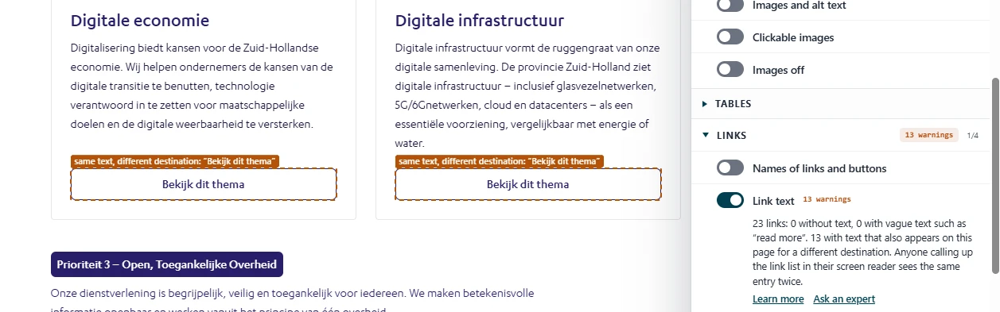
Op deze pagina hebben meerdere links dezelfde tekst, "Bekijk dit thema", terwijl ze naar verschillende pagina's gaan. Dat is verwarrend.
Zie ook de links "Lees meer", "Bekijk dit thema" en "Meer informatie" op:
User story
Ik lees de website met een schermlezer. Als ik door een lijst met links ga, hoor ik steeds dezelfde linktekst, maar kom ik elke keer op een andere pagina. Ik verwacht dat elke linktekst duidelijk zegt waar de link naartoe gaat.
Hoe te testen
Open de WCAG Radar en zet de optie "Linktekst" aan. Zoek links met dezelfde tekst die naar verschillende pagina's gaan.
Oplossing
Zorg dat de linktekst zegt waar de link naartoe gaat. Is de context voor het oog duidelijk, bijvoorbeeld omdat de link in een eigen blok staat? Vul de tekst dan aan met verborgen tekst voor schermlezers, bijvoorbeeld:
<a href="...">Bekijk dit thema<span class="sr-only">: Artificiële Intelligentie</span></a>
#11 - De tekstalternatief herhaalt tekst die er al staat
Impact: Matig
Type: Content
WCAG: 1.1.1
EN: 9.1.1.1
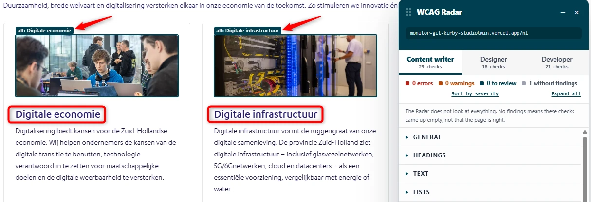
Op deze pagina staan onder het zoekveld artikelen met een afbeelding. De tekstalternatieven van de afbeeldingen herhalen de koppen onder de afbeeldingen. De afbeeldingen geven geen extra informatie en zijn daarom decoratief.
Zie ook de artikelen onder de kop "Gerelateerde thema's" op:
User story
Ik lees de website met een schermlezer. Als ik langs een afbeelding kom die naast beschrijvende tekst staat, leest mijn schermlezer dezelfde informatie twee keer voor. Ik verwacht dat de afbeelding wordt overgeslagen, zodat ik de tekst maar één keer hoor.
Hoe te testen
Open de WCAG Radar en zet de optie "Afbeeldingen en alt-tekst" aan. Je ziet bij elke afbeelding, elk icoon en elke SVG of er een tekstalternatief is en wat er staat. Informatieve elementen hebben een toegankelijke naam nodig die de betekenis weergeeft: een alt-attribuut op een <img>, een aria-label of <title>-element op een SVG, of een toegankelijke naam bij een icoonfont. Decoratieve elementen horen niet in de HTML, maar als CSS-achtergrond. Staat een decoratief element toch in de HTML, verberg het dan voor hulpsoftware met aria-hidden="true", of met een lege alt bij een <img>. Luister daarna met een schermlezer: die mag geen bestandsnaam of het woord "afbeelding" voorlezen.
Oplossing
Maak het alt-attribuut van deze afbeeldingen leeg (alt=""), zodat de schermlezer de informatie niet dubbel voorleest. Controleer alle afbeeldingen op de website, en geef afbeeldingen die de tekst ernaast herhalen een lege alt.
#12 - Engelse tekstalternatieven en toegankelijke namen op Nederlandse pagina's
Impact: Matig
Type: Techniek
WCAG: 3.1.2
EN: 9.3.1.2
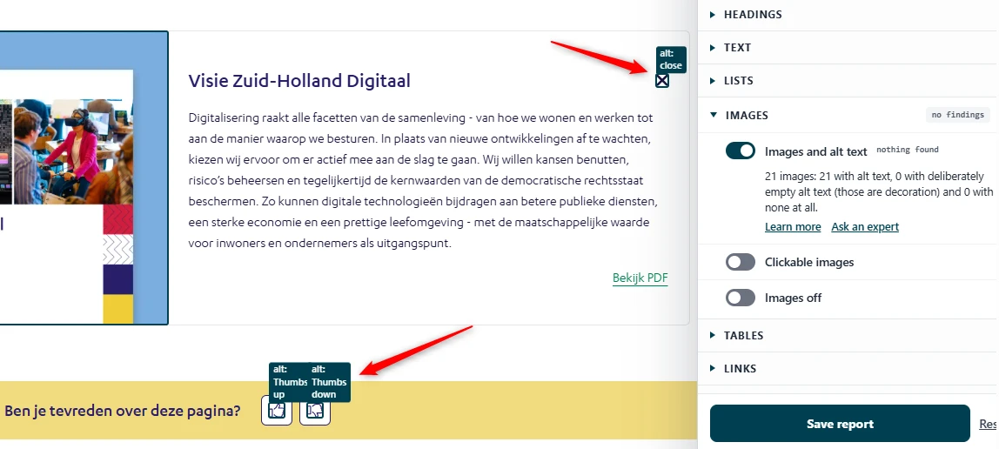
Op deze Nederlandse pagina staat naast de kop "Visie Zuid-Holland Digitaal" een knop met een kruisje. De knop heeft de Engelse toegankelijke naam "close". Die naam komt uit de tekstalternatief van de afbeelding. Een schermlezer spreekt de tekst uit volgens de regels van de hoofdtaal van de pagina, hier Nederlands, en spreekt het Engelse woord dan verkeerd uit.
Hetzelfde geldt voor de iconen naast "Ben je tevreden over deze pagina?", met de tekstalternatieven "Thumbs up" en "Thumbs down".
Zie ook de knop "Play" in de video op:
User story
Ik gebruik een schermlezer en luister naar de alt-teksten van afbeeldingen en de namen van knoppen en links. Die moeten in de taal van de pagina zijn, of met lang gemarkeerd. Anders leest mijn schermlezer onverstaanbare woorden voor.
Hoe te testen
Controleer met de WCAG Radar de tekstalternatieven en de toegankelijke namen van knoppen. Ze moeten in dezelfde taal zijn als de pagina.
Oplossing
Schrijf de tekstalternatief in de taal van de pagina. Moet de tekst in een andere taal zijn, geef de taal dan aan met het lang-attribuut op het element, bijvoorbeeld lang="en" voor Engels.
Link naar pagina: https://monitor-git-kirby-studiotwin.vercel.app/nl/artificiele-intelligentie
#13 - Een decoratieve afbeelding is niet verborgen voor schermlezers
Impact: Matig
Type: Content
WCAG: 1.1.1
EN: 9.1.1.1
Op deze pagina staat onder de kop "Artificiële Intelligentie" een decoratieve afbeelding met de tekstalternatief "Thema afbeelding". Decoratieve afbeeldingen geven geen informatie en horen verborgen te zijn voor schermlezers. Hetzelfde geldt voor de afbeeldingen onder de kop "Algoritmeregister".
Zie ook:
User story
Ik lees de website met een schermlezer. Als ik bij een decoratieve afbeelding kom, leest mijn schermlezer overbodige tekst voor. Ik verwacht dat decoratieve afbeeldingen worden overgeslagen.
Hoe te testen
Open de WCAG Radar en zet de optie "Afbeeldingen en alt-tekst" aan. Je ziet bij elke afbeelding, elk icoon en elke SVG of er een tekstalternatief is en wat er staat. Decoratieve elementen horen niet in de HTML, maar als CSS-achtergrond. Staat een decoratief element toch in de HTML, verberg het dan voor hulpsoftware met aria-hidden="true", of met een lege alt bij een <img>. Luister daarna met een schermlezer: die mag geen bestandsnaam of het woord "afbeelding" voorlezen.
Oplossing
Geef decoratieve img-elementen een leeg alt-attribuut: alt="". Vindt de redactie dat de afbeelding wel informatie geeft die bezoekers nodig hebben? Beschrijf dan kort en duidelijk in de alt wat er op de afbeelding staat.
#14 - De video heeft geen ondertitels
Impact: Matig
Type: Content
WCAG: 1.2.2
EN: 9.1.2.2
Op deze pagina staat een video waarin gesproken wordt, maar de video heeft geen ondertitels. Doven en slechthorenden hebben ondertitels nodig om de inhoud van de video te volgen. Ondertitels geven naast de gesproken tekst ook belangrijke geluiden weer, en zeggen wie er spreekt als die persoon niet in beeld is.
Zie ook de video's op:
User story
Ik ben doof of slechthorend. Als ik een video bekijk, mis ik alles wat er gezegd wordt, omdat er geen ondertitels zijn. Ik verwacht dat elke video ondertitels heeft met alle gesproken tekst.
Hoe te testen
Zoek elke vooraf opgenomen video met geluid en zet de ondertitels aan in de speler. Bekijk de video en controleer of de ondertitels alle gesproken tekst en belangrijke geluiden bevatten, of ze zeggen wie er spreekt als die persoon niet in beeld is, en of ze in de taal van het gesproken woord zijn.
Staat er duidelijk op de pagina dat de video een versie is van tekst die al op die pagina staat? Dan geldt de uitzondering en zijn ondertitels niet nodig.
Oplossing
Maak een ondertitelbestand in de gesproken taal en koppel het aan de video. Op een videoplatform upload je dat bestand bij de video. In een eigen speler voeg je het toe met een <track kind="captions">-element. Neem de gesproken tekst, de belangrijke geluiden en de sprekers op.
#15 - De videospeler heeft sneltoetsen van één teken
Impact: Matig
Type: Content
WCAG: 2.1.4
EN: 9.2.1.4
De videospeler op deze pagina heeft sneltoetsen van één teken, zoals K om de video te starten of te pauzeren en M om het geluid uit te zetten. Deze sneltoetsen werken ook als de focus op een ander element in de speler staat, en zitten dan de toetsen van een schermlezer in de weg. Voor mensen die spraakbesturing gebruiken is het ook een probleem, want deze letters kunnen in gesproken woorden voorkomen. Wie per ongeluk een toets indrukt, start of stopt de video zonder dat te willen.
Zie ook de video's op:
User story
Ik bedien de website met spraak. Als ik een woord met een "k" of een "m" uitspreek, pauzeert de video of gaat het geluid uit. Ik verwacht dat losse letters buiten de videospeler niets doen.
Hoe te testen
Start de video. Klik buiten de video. Typ een paar veelgebruikte toetsen, zoals Spatie, M en K, en kijk of de videospeler reageert.
Oplossing
Zet de sneltoetsen van één teken uit in de HTML-code van de speler.
#16 - Visuele informatie in de video is niet toegankelijk
Impact: Matig
Type: Content
WCAG: 1.2.3, 1.2.5
EN: 9.1.2.3, 9.1.2.5
Op deze pagina staat onder de kop "Artificiële Intelligentie in het kort" een video. In de video staan op verschillende momenten tekst en logo's in beeld, bijvoorbeeld rond 0:07, 1:34 en 1:37. Er is geen media-alternatief en geen audiodescriptie. Blinde bezoekers missen daardoor de tekst en de logo's in beeld.
Zie ook de video's op:
User story
Ik kan de video niet zien. Als ik naar een video luister waarin logo's of tekst in beeld komen, mis ik die informatie helemaal. Ik verwacht een audiodescriptie of een geschreven alternatief met die visuele informatie.
Hoe te testen
Controleer bij elke vooraf opgenomen video met geluid of er een audiodescriptie is, of dat de gesproken tekst de visuele informatie al beschrijft. Een uitgeschreven tekst alleen is op niveau AA niet genoeg. Zet de audiodescriptie aan en controleer of dat met het toetsenbord en met een schermlezer lukt.
Oplossing
Zorg voor een alternatief dat alle belangrijke visuele informatie in de video weergeeft.
Voor WCAG 1.2.3 (niveau A) is een audiodescriptie of een volledig media-alternatief met de visuele informatie genoeg.
Voor WCAG 1.2.5 (niveau AA) is een audiodescriptie nodig. Die beschrijft de belangrijke visuele details, zoals tekst en logo's in beeld, die de gesproken tekst nog niet noemt.
Plaats de audiodescriptie waar mogelijk in de stiltes van het oorspronkelijke geluid, zodat hij niet over gesproken tekst of belangrijke geluiden heen valt.
#17 - De knop voor hoog contrast heeft zelf te weinig contrast
Impact: Advies
Type: Techniek
WCAG: 1.4.11
EN: 9.1.4.11
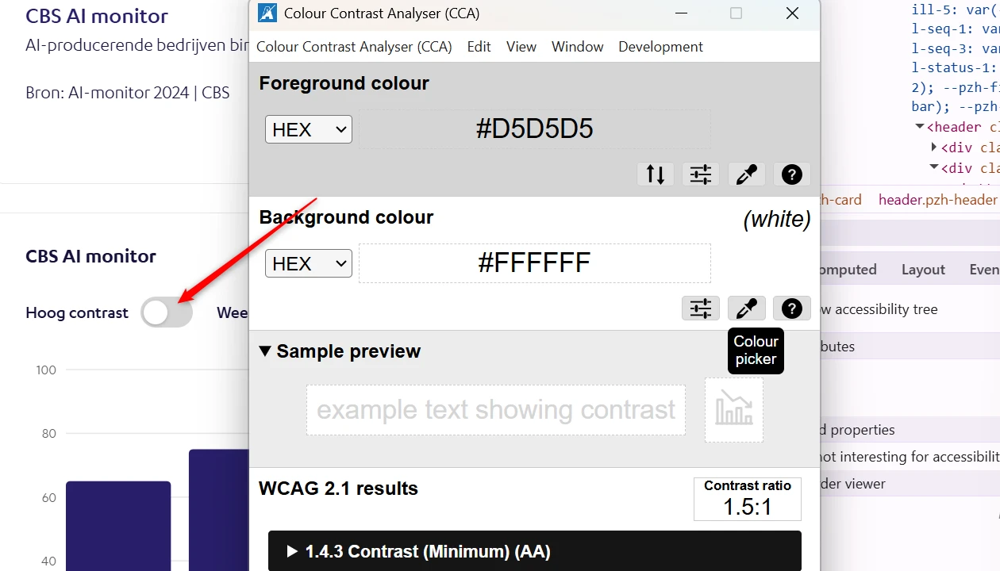
Op deze pagina staan grafieken met een knop voor hoog contrast. Die knop is bedoeld voor bezoekers die meer contrast nodig hebben. De knop zelf heeft te weinig contrast: grijs (#D5D5D5) op een witte achtergrond. Juist de bezoekers voor wie de knop bedoeld is, zien hem daardoor slecht.
De informatie in de grafieken staat ook in een tabel en in tekst. Daarom is dit een advies.
Zie ook de grafieken op:
User story
Ik ben slechtziend. Als ik de knop voor hoog contrast wil gebruiken, zie ik die knop niet. Ik verwacht dat de knop zelf genoeg contrast heeft.
Hoe te testen
Meet het contrast met de Colour Contrast Analyser (CCA). Lukt het niet om precies de juiste pixel te kiezen, zoek de kleurwaarde dan op in de inspector van de browser. Het gaat om het contrast van het element met de achtergrond.
Oplossing
Zorg dat de knop voor hoog contrast, en ook andere informatieve iconen, een contrastverhouding van minimaal 3,0:1 met de achtergrond heeft.
#18 - Statusiconen hebben geen goede tekstalternatieven
Impact: Matig
Type: Content
WCAG: 1.1.1, 3.1.2
EN: 9.1.1.1, 9.3.1.2
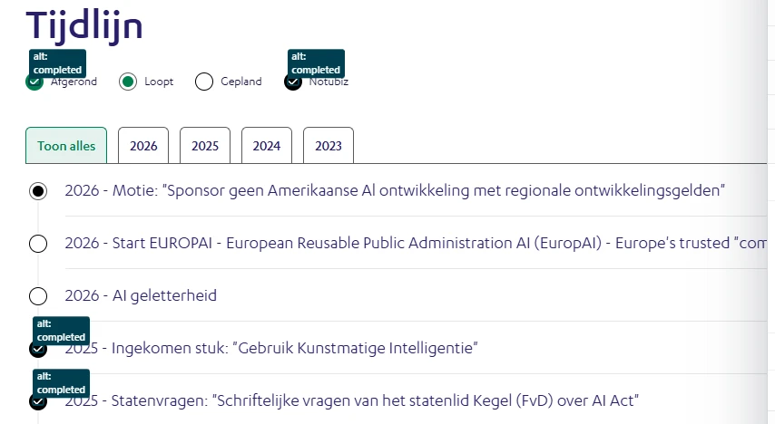
Onder de kop "Tijdlijn" staan een legenda en een tijdlijn met iconen. De iconen geven de status van elk onderdeel aan, zoals "Afgerond" en "Loopt". Een deel van deze informatieve iconen heeft geen tekstalternatief. Andere hebben de algemene Engelse tekstalternatief "completed". Schermlezergebruikers krijgen de status die de iconen laten zien daardoor niet overal te horen.
Zie ook:
User story
Ik lees de website met een schermlezer. Als ik door de tijdlijn ga, hoor ik niet welke status een onderdeel heeft. Ik verwacht dat elk statusicoon een tekstalternatief heeft dat de status noemt.
Hoe te testen
Ga met een schermlezer langs de onderdelen van de tijdlijn en luister hoe de statusiconen worden voorgelezen. Controleer of elk informatief icoon een tekstalternatief heeft met dezelfde status die je ziet.
Oplossing
Geef elk informatief statusicoon een tekstalternatief met de status. Gebruik dezelfde Nederlandse woorden als in de zichtbare legenda: "Afgerond", "Loopt", "Gepland" en "Notubiz".
#19 - Te weinig contrast van tekst
Impact: Matig
Type: Techniek
WCAG: 1.4.3
EN: 9.1.4.3
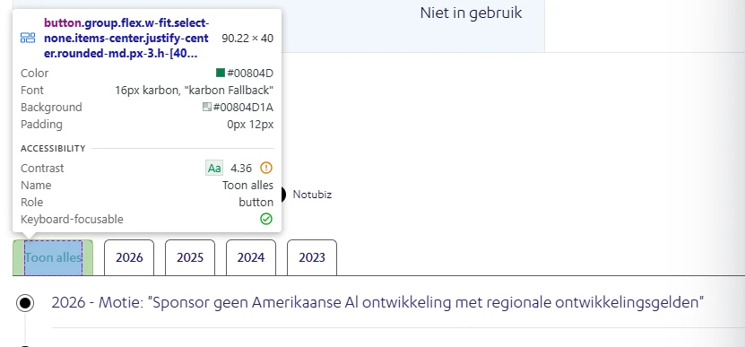
Onder de kop "Tijdlijn" staan elementen die eruitzien als tabbladen. De groene (#00804D) tekst in het actieve tabblad staat op een lichtgroene (#E5F2ED) achtergrond. De contrastverhouding is 4,4:1. Dat is lager dan de minimale 4,5:1.
Zie ook:
User story
Ik ben slechtziend. Als tekst te weinig contrast heeft met de achtergrond, kan ik die moeilijk lezen. Ik verwacht dat tekst genoeg contrast heeft om hem makkelijk te lezen.
Hoe te testen
Open de WCAG Radar en zet de optie "Contrast" aan. Tekst op een effen achtergrond met te weinig contrast wordt vanzelf gemarkeerd. Bij tekst op een foto of een kleurverloop meet je met de twee pipetten de kleur van de tekst en van de achtergrond. Normale tekst heeft minimaal 4,5:1 nodig, grote tekst (vanaf 24 px, of vanaf 18,7 px vet) minimaal 3,0:1.
Oplossing
Deze tekst is kleiner dan 19 px. Zorg voor een contrastverhouding van minimaal 4,5:1.
#20 - Knoppen die werken als tabbladen hebben niet de juiste rol, status en toetsenbordbediening
Impact: Matig
Type: Techniek
WCAG: 4.1.2
EN: 9.4.1.2
Op deze pagina staan onder de kop "Tijdlijn" knoppen die eruitzien en werken als tabbladen. In de code zijn het gewone knoppen. De attributen die bij tabbladen horen ontbreken, en de toetsenbordfocus werkt niet zoals bij tabbladen.
Schermlezergebruikers horen daardoor niet dat de knoppen samen een set tabbladen vormen, en ook niet welk tabblad actief is. Toetsenbordgebruikers kunnen niet met de gebruikelijke toetsen tussen de tabbladen wisselen.
Zie ook:
User story
Ik lees de website met een schermlezer. Als ik door de tabbladen ga, hoor ik niet dat het tabbladen zijn. Ik verwacht dat mijn schermlezer zegt welk tabblad actief is en welke inhoud erbij hoort.
Hoe te testen
Bekijk elk interactief onderdeel (link, knop, invoerveld, eigen component) in het toegankelijkheidspaneel van DevTools en met een schermlezer. Elk onderdeel moet laten weten wat het is (rol), hoe het heet (naam), wat de status is (uitgeklapt, geselecteerd, aangevinkt) en, waar dat van toepassing is, welke waarde het heeft. Gebruik liever standaard-HTML dan eigen ARIA.
Oplossing
Bouw de tabbladen volgens het patroon in de ARIA Authoring Practices Guide. Zorg voor deze rollen, eigenschappen en toetsenbordbediening:
- Lijst met tabbladen: geef het element om de tabbladen heen
role="tablist", en waar nodig een toegankelijke naam met aria-label of aria-labelledby.
- Tabbladen: geef elk tabblad
role="tab", een unieke id en een aria-controls die verwijst naar het bijbehorende paneel.
- Status: geef het actieve tabblad
aria-selected="true" en de andere tabbladen aria-selected="false". Pas de waarden aan als een ander tabblad wordt gekozen.
- Panelen: geef elk paneel
role="tabpanel" en een aria-labelledby die verwijst naar het bijbehorende tabblad.
- Toetsenbordfocus: alleen het actieve tabblad zit in de tabvolgorde (
tabindex="0"), de andere tabbladen krijgen tabindex="-1".
- Toetsenbordbediening: met Tab ga je de set tabbladen in en uit. Met ← en → ga je naar het vorige of volgende tabblad, met Home en End naar het eerste of laatste. Wordt een tabblad niet vanzelf actief als het focus krijgt, dan activeer je het met Enter of Spatie.
Toon het paneel van het gekozen tabblad en verberg de andere panelen.
#21 - De knoppen van een accordeon zijn niet als kop gecodeerd
Impact: Serieus
Type: Techniek
WCAG: 1.3.1
EN: 9.1.3.1
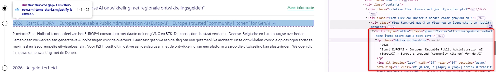
Op deze pagina staan onder de kop "Tijdlijn", in de tabbladen "Toon alles" en "2026", onderdelen die je kunt openen en sluiten. De teksten waarmee je deze onderdelen opent en sluit, zijn niet als kop gecodeerd. Deze teksten zijn wel de kop van de inhoud eronder, en moeten daarom als kop in de code staan.
Zie ook de accordeons in de tabbladen "Toon alles" en "2023" op https://monitor-git-kirby-studiotwin.vercel.app/nl/informatieveiligheid-en-privacy.
User story
Ik lees de website met een schermlezer. Als ik via de koppen navigeer, staan de titels van de accordeon niet in mijn lijst met koppen. Ik verwacht dat die titels koppen zijn, zodat ik ze snel vind.
Hoe te testen
Navigeer met een schermlezer via de koppen door de pagina. Controleer of de titels van de onderdelen in de accordeon als kop worden voorgelezen en via de koppen te bereiken zijn.
Oplossing
Zet de knop van elk onderdeel in een kopelement, zoals een h2 of h3. In de ARIA Authoring Practices Guide lees je hoe je een toegankelijke accordeon bouwt.
#22 - Een schermlezer hoort niet of een accordeon open of dicht is
Impact: Serieus
Type: Techniek
WCAG: 4.1.2
EN: 9.4.1.2
Op deze pagina staan onder de kop "Tijdlijn", in de tabbladen "Toon alles" en "2026", onderdelen die je kunt openen en sluiten. Je ziet of een onderdeel open of dicht is, maar een schermlezer krijgt die informatie niet door.
User story
Ik lees de website met een schermlezer. Als ik een onderdeel van een accordeon activeer, hoor ik niet of het open of dicht is. Ik verwacht dat mijn schermlezer zegt of een onderdeel is uitgeklapt of ingeklapt.
Hoe te testen
Kies in de toegankelijkheidsboom van DevTools de knop die het onderdeel opent en sluit. Controleer of de knop aria-expanded heeft, met de waarde false als het onderdeel dicht is en true als het open is. Luister daarna met een schermlezer: die moet zeggen of het onderdeel in- of uitgeklapt is, en dat moet veranderen als je de knop gebruikt.
Oplossing
Dit kan op twee manieren:
- Geef het element dat het onderdeel opent en sluit het attribuut
aria-expanded. De waarde is true als het onderdeel open is en false als het dicht is. Pas de waarde aan zodra het onderdeel opent of sluit.
- Zet verborgen tekst bij de knop die de status noemt, bijvoorbeeld "(open)" of "(dicht)", en pas die tekst aan als de status verandert. Een schermlezer leest deze tekst voor, maar hij is niet zichtbaar.
Link naar pagina: https://monitor-git-kirby-studiotwin.vercel.app/nl/artificiele-intelligentie
Link naar PDF: https://open.overheid.nl/documenten/9aa7b64a-be51-4e6a-ad34-26050b8a67ef/file
#24 - Te weinig contrast van kleine tekst
Impact: Matig
Type: Content
WCAG: 1.4.3
EN: 10.1.4.3
In dit PDF-document is op een aantal plekken te weinig contrast. Op pagina 18 staat de tekst onder de koppen "Waarom?" en "Ambitie" in blauw (#214A79) op een roze achtergrond (#D565A3 en #E399C1). De contrastverhouding is 2,7:1 en 4,1:1.
Op dezelfde pagina staat de witte tekst "Vormgeven en toepassen wet- en regelgeving" op een groene (#44AB34) achtergrond, met een contrastverhouding van 2,9:1.
Op pagina 30, 31 en andere pagina's staat de tekst in de kopcellen van de tabellen in blauw (#03598F) op een lichtgroene (#86CAC0) achtergrond. De contrastverhouding is 4,0:1.
Kleine tekst heeft minimaal 4,5:1 nodig, grote tekst minimaal 3,0:1.
User story
Ik ben slechtziend en heb goed contrast nodig. Zonder dat contrast kan ik de tekst niet goed lezen.
Hoe te testen
Draai PAC (PDF Accessibility Checker) voor een automatische contrastcontrole. Meet twijfelgevallen met de Colour Contrast Analyser op een schermafdruk van de pagina. Normale tekst heeft minimaal 4,5:1 nodig, grote tekst (vanaf 24 px, of vanaf 18,7 px vet) minimaal 3,0:1. Let ook op tekst op achtergrondafbeeldingen, watermerken, placeholders in formuliervelden en voetnoten.
Oplossing
Pas de tekstkleur of de achtergrondkleur aan, zodat de contrastverhouding minimaal 4,5:1 is voor normale tekst en 3,0:1 voor grote tekst. Controleer de nieuwe kleurcombinatie met de Colour Contrast Analyser voordat je de PDF publiceert.
#25 - Structuur van het PDF-document is niet in codes vastgelegd
Impact: Serieus
Type: Content
WCAG: 1.3.1
EN: 10.1.3.1
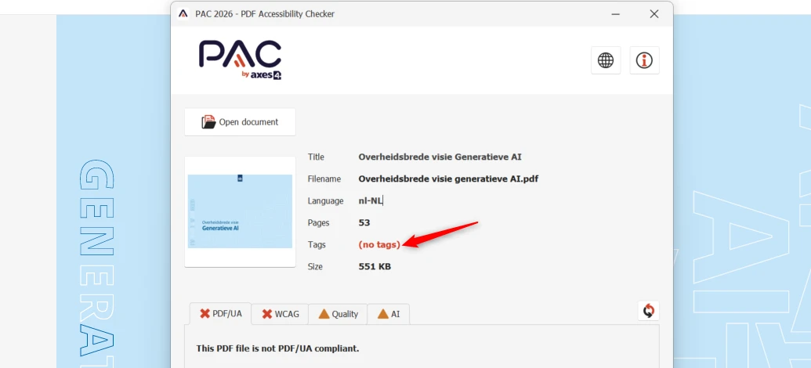
Dit PDF-document heeft geen codes (tags). Een schermlezer kan de inhoud daardoor niet voorlezen. Zonder codes is ook geen volledig onderzoek mogelijk: alle succescriteria die over de codelaag van de PDF gaan, zoals koppen en tekstalternatieven voor afbeeldingen, zijn niet te beoordelen. Als de codes zijn toegevoegd, kunnen er dus nieuwe toegankelijkheidsproblemen zichtbaar worden.
User story
Ik kan het document niet zien en gebruik een schermlezer. Als ik een PDF zonder codes open, is er niets dat mijn schermlezer kan voorlezen. Ik verwacht dat een PDF codes heeft, zodat alle inhoud voor mij beschikbaar is.
Hoe te testen
Open de PDF in Adobe Acrobat Pro en bekijk de codestructuur (Weergave → Tonen/verbergen → Navigatievensters → Codes). Koppen, lijsten, tabellen en formuliervelden moeten allemaal als juiste code bestaan (<H1> tot en met <H6>, <L>, <Table> met <TH>, <TR> en <TD>, <Form>). Draai de ingebouwde toegankelijkheidscontrole en PAC (PDF Accessibility Checker) voor een automatische controle. Controleer daarna met een schermlezer of de volgorde logisch is.
Oplossing
Voeg codes toe aan het document die de structuur van het document weergeven.